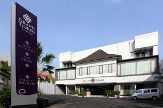

Santika Indonesia Hotels & Resorts
Santika Indonesia Hotel & Resorts adalah salah satu grup hotel di Indonesia dan dikelola oleh PT. Grahawita Santika, unit bisnis Kelompok Kompas Gramedia. PT. Grahawita Santika didirikan pada tanggal 22 Agustus 1981. Santika Indonesia Hotels & Resorts telah memiliki lebih dari 40 hotel yang tersebar di seluruh Indonesia. Sejak tahun 2006, Santika Indonesia Hotels & Resorts mengubah strateginya berdasarkan segmentasi pasar dengan membagi beberapa brand menjadi The Royal Collection, Hotel Santika Premiere, Hotel Santika, dan Amaris Hotel. Visi Santika Indonesia Hotels & Resorts adalah menjadi grup hotel terbesar di Indonesia dan merambah bisnisnya ke Asia Tenggara. Pada akhir tahun 2012, Santika Indonesia Hotels & Resorts akan mengelola setidaknya 64 properti, yang setara dengan 7.200+ kamar. Hingga sekarang, Santika Indonesia Hotels & Resorts menjadi kelompok bisnis investasi dan pengelola hotel internasional termasuk vila mewah, hotel, resort, serta spa dan restoran yang terdapat di dalam hotel dan resort-nya.
Saat ini Santika Indonesia Hotels & Resorts memiliki empat brand, yaitu:
Desain By Faris Fatahudin